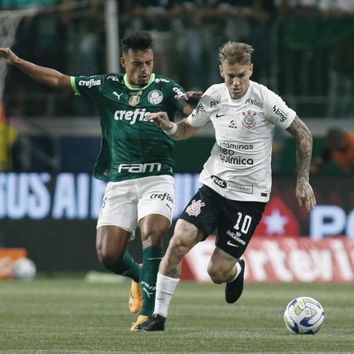

Você está pronto para vestir a paixão?
Venha à The Soccer Store e encontre as camisas mais incríveis dos quatro principais times paulistas: Corinthians, Palmeiras, Santos e São Paulo! Seja para você ou para presentear um amigo torcedor, temos as melhores opções para você mostrar seu amor pelo futebol.
Qual é o seu time? Seja um alvinegro, um palestrino, um santista ou um tricolor, aqui você encontra a camisa perfeita para vestir a paixão! Visite-nos e se prepare para entrar em campo com estilo! Vamos vestir a paixão juntos!